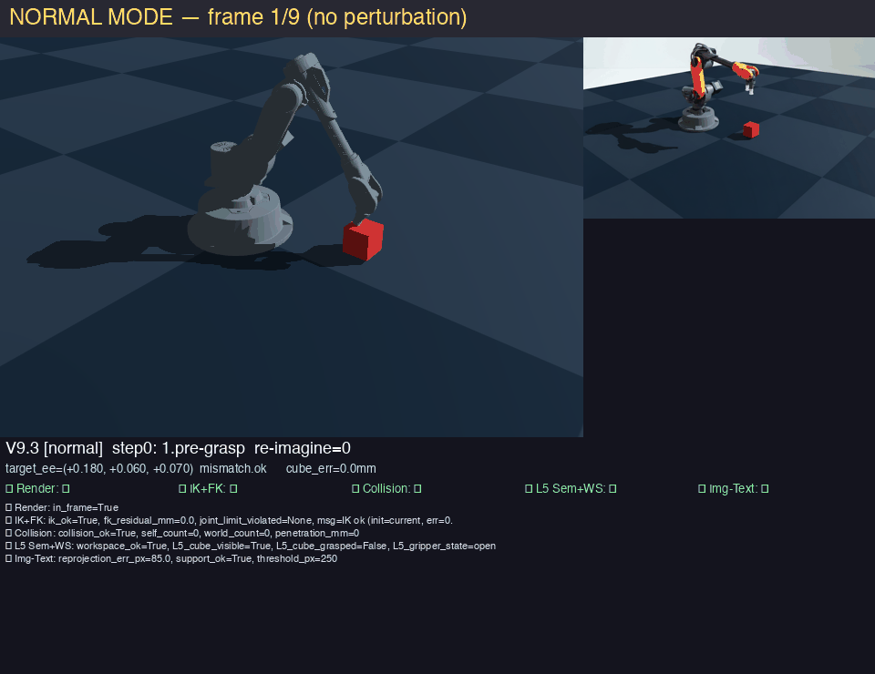
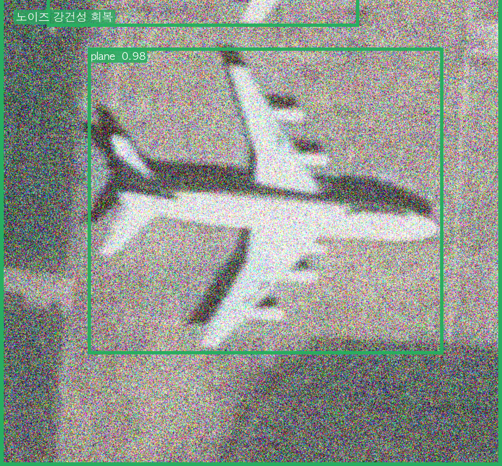
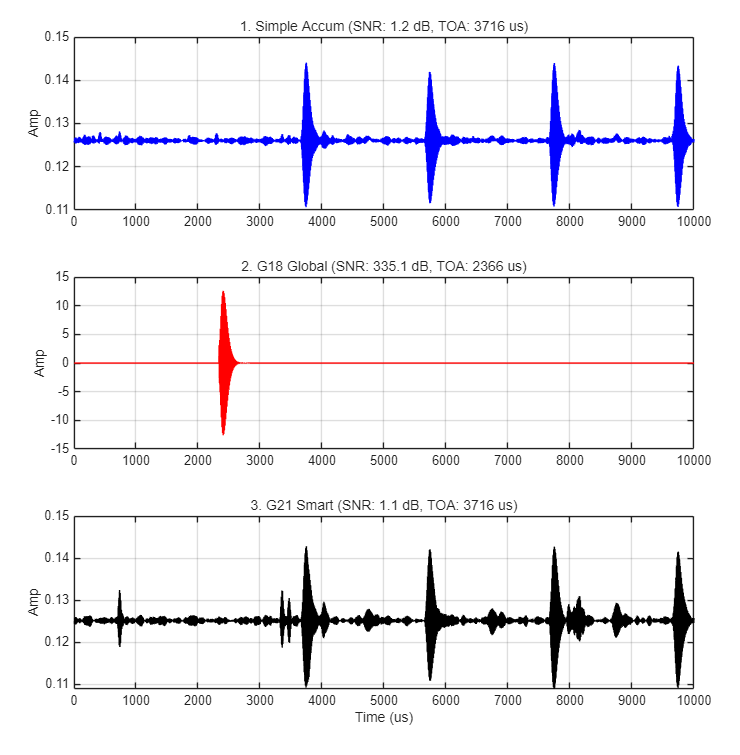

Featured work
Ordered by how much of it is mine. Each card says what I did and what the measurement showed.
Gating VLM Robot Commands on Forward Kinematics (KAERI)
2026 · KAERI internship · first-author paperA VLM proposes where the arm should go; forward kinematics decides whether that pose is reachable before anything moves. First-author paper, and the result was negative in a useful way.
- Designed controlled ablations (DOF 1→2→5; hints No-hint / CoT / joint-info / image feedback; VLM read-vs-generate) to isolate where spatial reasoning fails.
- Surfaced concrete failure signals: joint-info hints hurt (165.7mm → 276.9mm), a Verifier ceiling at 5-DOF, and same-family self-verification bias.
- Ran the full research loop solo — experiment design, data collection, visualization, and the report submitted to the lab.
What it establishes: a model checking itself is not enough. Oral presentation + proceedings, Korea Society of Industrial Information Systems 2026. The project was discontinued in July 2026; this negative result is what it produced.

FedV9 — Noise-Robust Object Detection via Heterogeneous Relational KD
2025.11 – present · capstone · team lead, sole ML/codeKeeping a lightweight detector accurate under satellite sensor noise by distilling a foundation model's relational structure.
- Distill DINOv2 (ViT) → YOLOv8s-seg (CNN) across a heterogeneous gap via distance-wise relational KD + 50:50 mixed-noise training.
- Built the full ML pipeline solo: RKD loss, custom Ultralytics trainer (SPPF hook + adapter + mixed noise), and 3 framework-level bug fixes.
- Teacher & adapter detached at inference → zero added cost.
Result (σ=0.3, iSAID): noisy mAP50 0.009 → 0.196, clean 0.278 → 0.426; deployed model 11.8M / 22MB.


Drag — same noisy tile (σ=0.3): baseline finds nothing, the distilled model keeps the lock.
Open interactive demo → Code & deep-diveeLoran Coherent Accumulation under Random Sample Loss (NAVIS Lab)
2025.12 – present · lab project · evaluation and analysis were mineA lab project on recovering time-of-arrival when a receiver randomly drops samples. Two compensation schemes existed — one time-domain, one frequency-domain — and my part was to find out whether either of them actually worked.
- Ran the evaluation at 50% random sample loss over 1,000 Monte-Carlo runs, reporting error CDFs, running-mean bias convergence, and per-station jitter histograms rather than a single favourable trial.
- Traced why the frequency-domain scheme fails despite looking better: the SNR it gains comes from reshaping the spectrum, and that reshaping shifts the correlation peak. Three independent readings agree — the bias line never converges to zero, the error CDF sits to the right of baseline, and the jitter spreads past one carrier period, which is a cycle slip.
- Wrote the 20-page report the lab uses for this result.
Finding: the frequency-domain scheme bought +6.78 dB and paid a permanent +1.497 µs TOA bias with error variance 146–219% worse; the time-domain one overfitted onto a single pulse and was excluded from the statistical run. Plain accumulation won. For a system that needs microsecond arrival times, higher SNR is the wrong thing to optimise — reconstructing samples that were never received corrupts the 100 kHz carrier phase for good.
